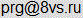

На главную
e-mail:

Если у вас есть замечания по сайту и аккаунт на GitHub, пишите туда в issues.
При пересылке, пожалуйста, шифруйте всё, даже если это совершенно незначительные вещи. По запросу, дам также e-mail на protonmail.
Учтите, я сам могу использовать Windows. Предупредите, если хотите, чтобы я использовал другую ОС при расшифровке.
Шифруйте файлы с сообщениями в .txt формате, они более безопасные, чем pdf или doc.
Вы можете использовать любую бесплатную программу, в том числе OpenSSL (для Windows), однако, напишите мне, что вы будете использовать.
Можно согласовать симметричный ключ или пароль и потом использовать хоть 7-zip :) или мою программу (для Windows с .NET или для Linux с Mono; учтите, программа глюковатая, см. на странице Сервисы (программа BlackDisplay) как её правильно настроить, чтобы она не беспокоила).
Для переписки по согласованию пароля или простого шифрования используйте GnuPG www.gpg4win.org (для Windows; на Linux обычно стоит уже сразу)
Мой GPG ключ шифрования:
9F1DCCDF на keys.gnupg.net [0ADA 369A 692F 515F F4CC 6C2B D30A C753 C64B E61A] (зарегистрирован на мой основной e-mail)
Скачать публичную часть ключа:
9F1DCCDF.pub
Если есть возможность, лучше качать ключ с keys.gnupg.net